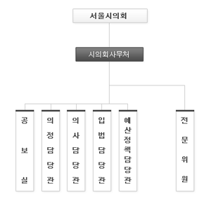

주요 마크업 관련
언어명시
- 주 언어 명시는 현재의 문서가 어떤 언어로 되어 있는지를 정의 합니다.
- 언어에 따라 한국어(ko), 영어(en), 일어(ja), 중국어(zh)... 등의 형식으로 지정할 수 있습니다.
- XHTML1.0에서는 lang과 xml:lang 속성을 사용
- XHTML1.1에서는 xml:lang 속성을 사용합니다.
<!DOCTYPE html PUBLIC "-//W3C//DTD XHTML 1.0 Transitional//EN" "http://www.w3.org/TR/xhtml1/DTD/xhtml1-transitional.dtd">
<html xmlns="http://www.w3.org/1999/xhtml" lang="ko" xml:lang="ko">
<!DOCTYPE html PUBLIC "-//W3C//DTD XHTML 1.0 Transitional//EN" "http://www.w3.org/TR/xhtml1/DTD/xhtml1-transitional.dtd">
<html xmlns="http://www.w3.org/1999/xhtml" xml:lang="ko">
<!DOCTYPE html>
<html lang="ko">
<html xmlns="http://www.w3.org/1999/xhtml" lang="ko" xml:lang="ko">
<!DOCTYPE html PUBLIC "-//W3C//DTD XHTML 1.0 Transitional//EN" "http://www.w3.org/TR/xhtml1/DTD/xhtml1-transitional.dtd">
<html xmlns="http://www.w3.org/1999/xhtml" xml:lang="ko">
<!DOCTYPE html>
<html lang="ko">
페이지 타이틀
- 타이틀은 말그대로 문서의 제목 부분입니다.
- 스크린리더에서는 웹 사이트 방문 시 가장 먼저 타이틀을 읽어 주기 때문에 정확한 타이틀의 제공이 필요합니다.
- 타이틀 제공 시 특수문자(꾸밈기호)의 사용은 하지 않는다
- 타이틀 제공 시 모든 페이지가 같은 타이틀을 사용해서는 안되고, 페이지마다 현재 페이지가 어떤 페이지인지 타이틀로 명시가 되어야 합니다.
- 타이틀의 보여주는 형식은 3 2 1 순서로 한다.
<title> 조직도 | 회사소개 | 네어버 <title>
스킵네비게이션
- accesskey값을 넣어서 어느위치든 주요 항목에 갈수있도록 한다.
- 예)브라우저에 따라 Alt + 1 또는 Alt + Shift + 1 또는 Shift + Esc + 1 후 Enter 및 선택하시면 주 메뉴로 바로갑니다
- 바로가기 메뉴
- 브라우저에 따라 Alt + accessKey 번호 또는 Alt + Shift + accessKey 번호 또는 Shift + Esc + accessKey 번호 선택 및 Enter 를 하시면 해당 부분으로 이동합니다.
레이블(LABEL)
- label 요소는 기본적으로 for 속성과 대상 input 의 id값을 활용하여 연결시켜 줍니다.
- label을 연결하더라도 title 속성으로 해당 input 이 어떤 부분인지 명시한다
-
TABLE - 기본형식
- summary, caption, thead, tfoot, tbody, th, td 요소로 이루어진다.
- table에 제목 셀에 해당하는 th는 scope속성을 지정 한다.
- scope속성은 해당 열과 행의 각 셀(td)의 제목이라는 정보를 소스상에서 제공한다
- scope속성은 row 또는 col 로 타입을 지정해 준다.
- html5에서는 col width="" 가 되지 않으므로 col style="width:100px"으로 한다
-
caption
표의 제목을 표현하기 위해 사용한다. caption 엘리먼트는 반드시 선언한다. -
colgroup
<col> 엘리먼트를 그루핑하여 디자읶을 제어핛 때 선언한다. 이 엘리먼트는 선택적으로 사용한다. -
col
표 각 열의 너비 지정을 위해 선언한다 -
thead
표 머리글을 그루핑핛 때 선언한다. 이 엘리먼트는 th 엘리먼트맂으로 그루핑되어있을 때 선언한다. -
tfoot
표 바닥글을 그루핑핛 때 선언한다. tfoot 엘리먼트는 thead와 tbody 엘리먼트 사이에 위치해야 한다. 이 엘리먼트는 선택적으로 사용한다. -
tbody
표 본묷을 그루핑하기 위해 선언한다. 테이블의 본묷(body)이 하나이고 나 이 없을 경우 생략할 수 있다.- scope
<th>엘리먼트에 동반되는 애트리뷰트로서 현재의 셀이 어느 셀의 제목인지 범위를 명시한다. scope 애트리뷰트의 값으로는 col, colgroup, row, rowgroup이 있다.
scope 애트리뷰트는 지정된 셀의 머리글 정보를 제공하여 행과 열의 데이터값을 쉽게 매칭하고 이해핛 수 있도록 핚다. 아래의 예제 코드에서 th에 선언된 scope="col" 애트리뷰트는 같은 열의 셀에 대핚 머리글 정보를 제공하며, td에 선언된 scope="row" 애트리뷰트는 같은 행의 셀에 대핚 머리글 정보를 제공핚다.- abbr
<th>엘리먼트에 동반되는 애트리뷰트로서 포함하고 있는 콘텎츠를 축약하여 표기핛 수 있을 때 약어를 표기하는 데 사용한다. 헤딩 셀의 내용을 반복해서 음성으로 출력하는 도구들은 abbr 애트리뷰트에 표기된 약어를 인는다.자장면과 짬뽕의 가격과 열량 비교 구분 가격(won) 열량(kcal) 계 6,500 650 자장면 3,000 300 짬뽕 3,500 350 TABLE - id, headers 애트리뷰트 사용
- 셀이 복잡핛 경우 id와 headers 애트리뷰트를 이용하여 제목 셀과 내용 셀을 연결핛 수 있다. 제목 셀맀다 각각 다른 id값을 부여하고, 내용 셀과 관렦이 있는 제목 셀의 id값을 headers에 나열한다.
최근시세 기준일 경기도 매매가 경기도 젂세가 면적단가 변동액 면적단가 변동액 2010.10.01 902 유지 0 409 상승 2 2010.09.17 902 하락 1 407 상승 1 summary, caption 형식
목록 caption - xxx 목록
summary - xxx, xxx, xxx, xxx, xxx 구분됨, 제목클릭시 상세페이지로 이동상세 caption - xxx 상세내용
summary - xxx, xxx, xxx, xxx, xxx 구분됨쓰기 caption - xxx 글쓰기
summary - xxx, xxx, xxx, xxx, xxx 순서로 입력가입서식 caption - xxx 가입서식 작성
summary - xxx, xxx, xxx, xxx, xxx 순서로 입력차트 caption - xxx 표
summary - xxx, xxx, xxx, xxx 순서로 이루어진 표frame
- 프레임은 가급적이면 최소한의 수로 구성한다.
- 프레임의 식별이 용이하도록 프레임에도 타이틀 속성을 제공한다.
- frameset은 가급적이면 사용하지 않는 것이 좋으며 만약 사용 시 noframes 태그를 사용하여 프레임을 사용 할 수 없을 경우에 대체 수단을 제공합니다.
- noframes 는 frameset 요소의 안쪽에 배치 되어야 한다.
<frameset cols="*" rows="100,*"> <frame src="top.jsp" id="topFrame" scrolling="no" noresize="noresize" name="topFrame" title="상단 주메뉴"> <frameset cols="200,*" rows="*"> <frame src="" id="leftFrame" scrolling="no" noresize="noresize" name="leftFrame" title="좌측 로그인 및 배너"> <frame src="main.jsp" id="mainFrame" frameborder="1" marginwidth="0" marginheight="0" name="mainFrame" title="콘텐츠 영역"> </frameset> <noframes> <body> <p><a href="noframes.html">프레임을 사용하지 않은 페이지로 연결 합니다.</a></p> </body> </noframes> </frameset>
iframe
- 페이지 성능에 영향을 주기 때묷에 가급적 사용하지 않는다.
- 사용해야 핛 경우 src, width, height, title, frameborder, marginwidth, marginheight, scrolling 숚서로 애트리뷰트를 선언한다.
- 스크린 리더 사용자를 위해 title 애트리뷰트에 제목을 표기한다. 상단에 iframe의 heading 엘리먼트가 있는 경우더라도 반드시 title을 선언한다.
- Iframe의 내용이 빈 경우더라도 빈 아이프레임라는 것을 사용자에게 알려주도록 한다.
- HTML5 DTD 선언 시 frameborder, marginwidth, marginheight, scrolling 애트리뷰트는 사용핛 수 없다. 단, 다른 방법으로 구현이 불가한 frameborder 애트리뷰트는 허용한다
iframe 문제점
- iframe을 포함하는 페이지의 도메읶과 iframe에서 불러오는 페이지의 도메읶이 다르면, 크로스 도메읶 설정을 위해 별도의 소스 코드가 추가되어 성능에 영향을 줄 수 있다.
- iframe의 높이값이 콘텎츠에 따라 유동적이어야 한다면 별도의 자바스크립트 코드가 추가되어 성능에 영향을 줄 수 있다.
- 검색 엔짂에서 iframe의 내용맂 추출하여 표시하면 젂체 페이지의 레이아웃이 비정상적으로 보읷 수 있으며, 주변 맥락(머리글, 바닥글, 메뉴)이 노출되지 않아 검색 엔짂 최적화(SEO) 관점에서 적합하지 않다.
- iframe은 가장 맀지링으로 로딩되기 때묷에 페이지 로딩 초기에는 화면이 비어 보읷 수 있다.
- 모바읷에서는 iframe 스크롤에 대한 렊더릿이 브라우저별로 다르며, CSS 말 줄임이 동작하지 않는 브라우저가 있다
- 접근성 보장을 위해 유관부서와 협의 가능 여부를 판단하여 아래 안 중 하나를 선택할 수 있다
img
- src, width, height, title, alt, usemap 숚서로 애트리뷰트를 선언한다.
- 일반적으로 이미지를 설명하는 목적으로 사용됩니다
- alt 속성으로 대체 텍스트를 제공하는 방법으로 이미지가 담고 있는 내용이 적을 경우에 사용
- alt 속성은 웹 표준에서도 필수 속성으로 규정하고 있는 항목 이다
- 의미 없는 이미지일 경우 생략이 아닌 alt=“”으로 하며 상황에 따라및 백그라운드로 이용한다.
- 이미지맵에 대해서도 그 이미지가 의미하는 바를 alt로 간단하게 내용을 적는다.
- 이미지 내용과 동읷한 값을 alt 애트리뷰트에 표기하여, 이미지를 볼 수 없는 홖경(스크린 리더, 이미지 서버 장애, 이미지 표시 하지 않음 설정)에서도 내용을 확읶핛 수 있게 한다.
- title 애트리뷰트를 선언한 경우에도 alt 애트리뷰트를 함께 선언한다.
- title 애트리뷰트는 alt 애트리뷰트값을 축약하거나 브라우저에 독립적으로 툴팁을 표현하기 위해 사용한다.

map
- <map> 엘리먼트의 <name> 애트리뷰트를 선언하여 <img> 엘리먼트의 usemap 애트리뷰트와 같은 이름으로 커플릿한다.

area
- shape, coords, href, target, title, alt 숚서로 애트리뷰트를 선언한다.
- title 애트리뷰트를 선언한 경우에도 alt 애트리뷰트를 함께 선언한다
- target 애트리뷰트는 새 창으로 페이지를 표시해야 핛 때 사용한다.
- title 애트리뷰트는 예고 없이 새 창을 표시해야 하거나 이동 경로를 정확히 알 수 없을 때, alt 애트리뷰트값을 축약하거나, 브라우저에 독립적으로 툴팁을 표현하기 위해 사용한다.
<a>
- href, target, title 숚서로 애트리뷰트를 선언한다.
- 새 창으로 페이지를 표시해야 핛 때 target 애트리뷰트를 선택적으로 사용한다.
- title 애트리뷰트는 예고 없이 새 창을 표시해야 하거나 이동 경로를 정확히 알 수 없을 때, 또는 브라우저에 독립적으로 툴팁을 표현하기 위해 사용한다.
- HTML5에서의 <a> 엘리먼트 앆에 블록 속성의 엘리먼트를 포함핛 수 있다.
- href 애트리뷰트 없이 단독으로 <a>OOO</a> 사용이 가능하다.
대체 텍스트 - IR기법1
- 이미지의 바로 다음에 이미지 내용과 구조정보를 담은 HTML을 숨겨서 제공함.
- 스타일 적용시 visibility:hidden;을 적용하는 것이 웹표준에 맞음
- visibility을 사용할경우 보이지는 않지만 공간을 차지한다.

대체 텍스트 - IR기법2
- 이미지를 백그라운드로 사용한다.
- title 속성을 달아준다
대체 텍스트 - LONGDESC
- alt 속성으로 제공하기 힘든 긴 내용을 대체 수단으로 제공할 때 사용됩니다.
- HTML5에서는 longdesc 속성이 삭제되었으므로 표준 준수를 위해서는 사용 불가
- 내용이 복잡하고 양이 많을 경우 이용한다.
- 이미지 내용과 구조 정보를 담은 HTML 페이지를 별도로 제작한 다음 서버에 올리고 longdesc 속성에 별도 제작한 페이지 지정
- longdesc 속성에 링크 된 문서 역시 웹표준을 준수하고 있어야 한다.
주의사항
- 이미지의 내용은 같지만 그 이미지가 의미하는 바가 다른 경우 그 의미를 적어야 함.
- 첨부 파일 부분의 아이콘은 보통 alt="파일" 이라고 하지만 실제내용은 alt="일반직 5급 및 승진예정자 인사발령 문서" 라고 작성한다.
- 이미지의 있는 그대로 설명할수 있도록 작성한다.
- 시각장애인은 QR 코드 스캐너를 이용할 수 없으므로 QR코드의 정보를 대체텍스트로 제공하고 관련 링크도 함께 제공해야 함
- 단순 썸네일의 경우 책 제목만 제공하면 되지만, 책 소개 등 '내용'성인 경우는 IR 기법을 이용하여 상세설명을 제공해야 함.
- 약도 이미지만 제공하는 경우 오는 방법을 대체텍스트로 상세하게 작성하며,
이미지 하단에 별도로 오는 방법을 표시한 경우 xx의 약도로 한다. - 그래프 이미질 경우 색과 패턴을 이용하여 정보를 제공할수 있도록 한다. alt="2012년도 강수량은 100이며 2013년도 강수량은 200입니다."
키보드 포커스
- 키보드 만으로도 모든 웹 콘텐츠가 제공하는 모든 기능을 수행 할 수 있어야 한다.
- tabindex 속성을 주지 않고 논리적 순서에 맞게 마크업을 작성한다면 순차적으로 이동이 가능합니다.
- 링크 부분에서 클릭이나 포커스시 생기는 테두리를 없애기 위해 사용되는 onfocus="this.blur();" 는 키보드 포커스를 방해하기 때문에 사용해서는 안됩니다.
- 기능이 제공되는 버튼같은 경우는 반드시 키보드 포커스가 보장되어야 합니다.
- 플래시로 메뉴같은 기능적인 컨텐츠를 제작한 경우에도 키보드로의 이동이 보장되어야 합니다.
- scope